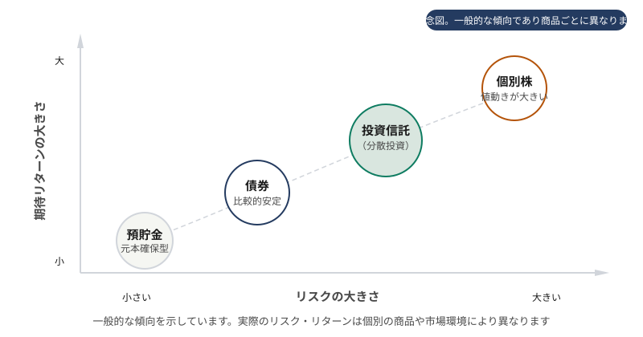

金融商品を知る
このページで学ぶこと
- 投資信託の仕組みと特徴
- ETF（上場投資信託）の仕組みと特徴
- 債券の仕組みと特徴
- 3つの金融商品の比較
投資信託
投資信託は、多くの投資家から集めた資金をひとつにまとめ、運用の専門家が株式や債券などに分散投資する金融商品です。
主な特徴
- 少額から投資できる（証券会社によっては100円から）
- 専門家が運用するため、個別銘柄の選定が不要
- 1つのファンドで複数の銘柄に分散投資できる
- 基準価額は1日1回算出される
- 信託報酬（運用管理費用）が継続的にかかる
- 購入時手数料がかかる場合がある（ノーロードの場合は無料）
分配金について
投資信託の中には、運用益の一部を「分配金」として定期的に支払うものがあります。ただし、分配金は運用益からだけでなく、元本を取り崩して支払われる場合もあります（元本払戻金 / 特別分配金）。分配金が多いファンドが良いファンドとは限りません。
ETF（上場投資信託）
ETF（Exchange Traded Fund）は、証券取引所に上場している投資信託です。株式と同じようにリアルタイムで売買でき、多くは特定の株価指数への連動を目指します。
主な特徴
- 取引所でリアルタイムに売買できる（株式と同様）
- 指値注文・成行注文が可能
- 一般的に投資信託よりも信託報酬がやや低い傾向がある
- 分配金は原則として自動再投資されず、現金で支払われる
- 購入単位は1口（または1株）から
- 売買時に証券会社の売買手数料がかかる場合がある
国内ETFと海外ETF
日本の証券取引所に上場しているETF（国内ETF）と、海外の取引所に上場しているETF（海外ETF）があります。海外ETFは為替手数料や外国株式の売買手数料がかかる場合があります。
債券
債券は、国や企業などが資金を借り入れるために発行する有価証券です。投資家は債券を購入することで発行体にお金を貸し、その見返りとして利子（クーポン）を受け取り、満期には元本が返済されます。
主な特徴
- 定期的に利子（クーポン）が支払われる（固定利付債の場合）
- 満期（償還日）に額面金額が返済される
- 一般的に株式よりも価格変動が小さい傾向がある
- 発行体の信用リスク（デフォルトリスク）がある
- 金利変動により債券価格が変動する（金利上昇で価格下落、金利低下で価格上昇）
債券の種類
- 国債: 国が発行する債券。日本国債、米国債など。一般的に信用リスクが低い
- 社債: 企業が発行する債券。国債より利回りが高い傾向があるが、信用リスクも高い
- 外国債券: 外国の政府や企業が発行する債券。為替リスクがある
債券と金利の関係
債券価格と金利は逆方向に動きます。金利が上がると、既に発行されている（より低い金利の）債券の価値は下がります。逆に金利が下がると、既発行債券の価値は上がります。この関係は債券投資を理解する上で重要です。
3つの金融商品の比較
| 項目 | 投資信託 | ETF | 債券 |
|---|---|---|---|
| 売買の場所 | 販売会社（証券会社・銀行等） | 証券取引所 | 証券会社（店頭取引が多い） |
| 価格決定 | 1日1回の基準価額 | リアルタイムの市場価格 | 店頭価格または市場価格 |
| 最低投資額 | 少額から（100円〜） | 1口単位 | 商品により異なる（個人向け国債は1万円から） |
| 分散投資 | 1本で多数の銘柄に分散 | 1本で多数の銘柄に分散 | 1銘柄は1発行体のみ |
| 主なリターン | 値上がり益・分配金 | 値上がり益・分配金 | 利子（クーポン）・値上がり益 |
| 主なリスク | 価格変動リスク・為替リスク | 価格変動リスク・為替リスク | 信用リスク・金利変動リスク・為替リスク |
| 運用コスト | 信託報酬（継続的） | 信託報酬（一般にやや低い） | なし（ただし売買時のスプレッドあり） |
図：金融商品のリスクとリターンの関係

一般的な傾向を示した概念図です。実際のリスク・リターンは個別の商品や市場環境により異なります
よくある誤解
債券は一般的に株式よりも価格変動が小さい傾向がありますが、信用リスク（発行体が利払いや元本返済をできなくなるリスク）や金利変動リスクがあります。外国債券には為替リスクもあります。「リスクがない」わけではありません。
分配金は運用益からだけでなく、元本を取り崩して支払われることがあります（元本払戻金）。この場合、実質的に自分の投資したお金が返ってきているだけです。分配金の額だけでファンドの良し悪しを判断することはできません。
ETFと投資信託にはそれぞれの特徴があります。ETFは信託報酬がやや低い傾向がありますが、自動積立に対応していない場合や、分配金の自動再投資ができない場合があります。どちらが適しているかは、投資スタイルや利用する証券会社によって異なります。
理解度チェック
Q1. 債券価格と金利の関係として正しいものはどれですか?
Q2. ETFの特徴として正しいものはどれですか?
Q3. 投資信託の分配金について正しいものはどれですか?